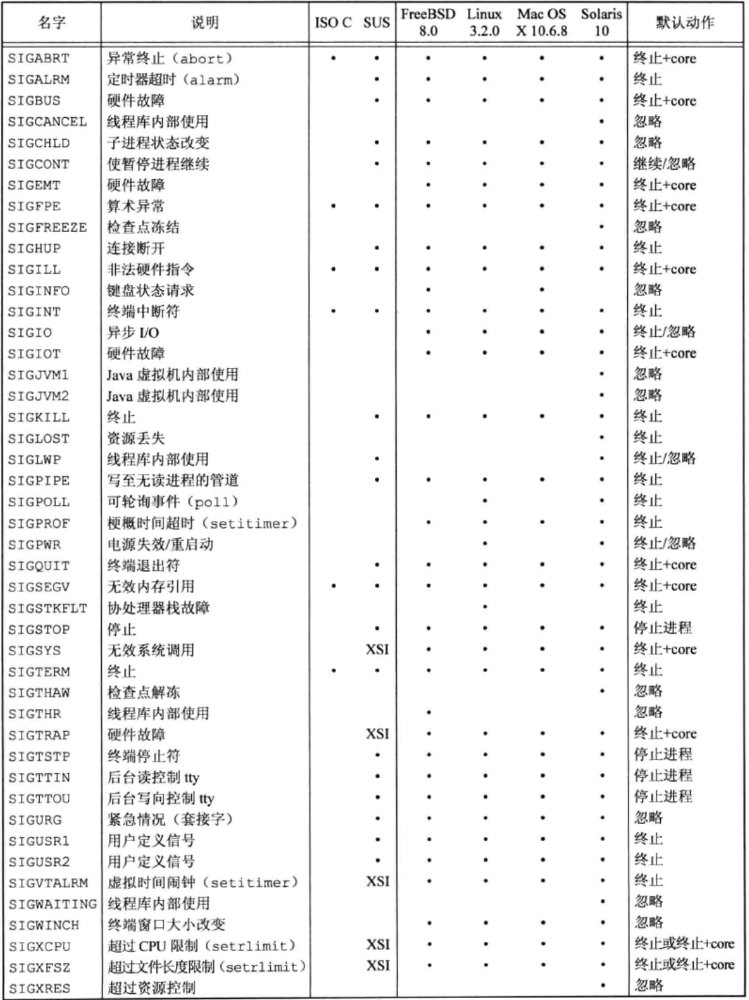

信号是软件中断
信号概念
信号定义在
信号产生的条件
- 当用户按某些终端键时，引发终端产生的信号。比如 Ctrl+C，产生中断 SIGINT
- 硬件异常产生信号，通知内核。如除数为0、无效的内存引用
- 进程调用 kill(2) 函数可将任意信号发送给另一个进程或进程组。接收信号的进程和发送信号的进程的所有者必须相同。或者发送方是超级用户
- 用户可用 kill(1) 命令将信号发送给其他进程
- 当某种软件条件发生时，将其通知有关进程。如 SIGPIPE（管道的读进程终止后，一个进程写此管道）
处理信号的方式
- 忽略此信号。大部分信号都可忽略。SIGKILL 和 SIGSTOP 不可忽略
- 捕捉信号，执行指定函数
- 执行系统默认动作。大多数信号的系统默认动作是终止进程

“终止+core”表示在进程当前工作目录的core文件中复制了该进程的内存镜像。大多数 UNIX 系统调试程序都使用 core 文件检查进程终止时的状态。
下列条件下不产生 core 文件
- 进程是设置用户 ID 的，而且当前用户并非程序文件的所有者
- 进程是设置组 ID 的，而且当前用户并非该程序文件的所有者
- 用户没有写当前工作目录的权限
- 文件已存在，而且当前用户对该文件没有写权限
- 文件太大
信号的详细说明
这里只记录几个我觉得比较熟悉的 ：）
SIGABRT
调用 abort 函数时产生此信号。进程异常终止
SIGALRM
当用 alarm 函数设置的定时器超时时，产生该信号。当 setitimer(2) 函数设置的间隔时间已经超时时，也产生此信号
SIGFPE
此信号表示一个算数运算异常，如除以0、浮点溢出等
SIGINT
当用户按中断键（Ctrl+C）时
SIGKILL
无法忽略的信号。是系统管理员杀死任意进程的可靠方法
SIGQUIT
当用户在终端上按退出键（Ctrl+\）时，中断驱动程序产生该信号，并发送给前台进程组中的所有进程。此信号不仅终止前台进程组，同时产生一个 core 文件
函数 signal
#include <signal.h>
void (*signal(int signo, void (*func)(int)))(int);
signo是信号名。func 的值是常量 SIG_IGN（忽略）、SIG_DFL（默认）或者接收到该信号后要调用的函数的地址